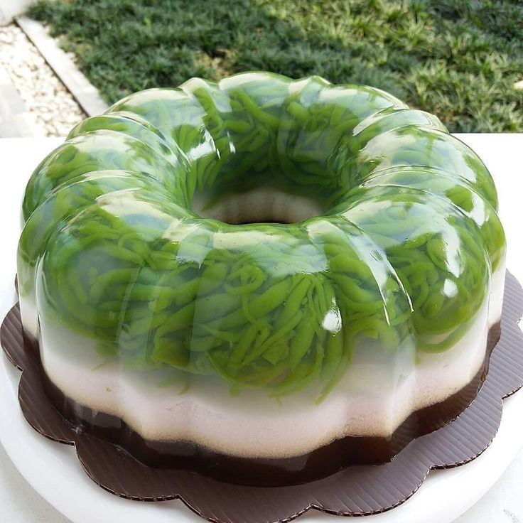

Resep puding Cendol

Bahan-Bahan:
Bahan A :
- 1 bungkus agar-agar
- 200 gr cendol
- 4 gelas air
- 1 gelas gula
- 1 kotak santan kental kara
Bahan B:
- 1 bungkus agar-agar
- 4 gls air
- 200 gr gula merah
- 3 helai daun pandan
Langkah-Langkah:
- Langkah 1 :
- Bahan A
Didihkan 4 gls air. masak agar agar. kemudian masukkan 1 gls gula, masak hingga agar & gula menjadi larut (mendidih) sudah mendidih, masukkan cendol yg sudah dibuang air nya. tunggu mendidih . . matikan apiny.
- Langkah 2 :
- Masukkan santan kotak, aduk rata. kemudian masukkan garam. aduk rata sehingga semua tercampur
- Langkah 3 :
- Masukkan dlm cetakan , dinginkan. selepas puding beku, Corak carik kan dgn garpu permukaan atas. sebab bagian atas untuk adonan gula
- Langkah 4 :
- Bahan B Masukkan semua bahan step 2 dalam panci . . masak dgn api yang perlahan, supaya daun pandan keluar aroma nya
- Langkah 5 :
- Selepas mendidih . . angkat dan tuang keatas Puding cendol tadi. dinginkan dalam 30minit. setelah itu bisa disimpan dalam lemari es